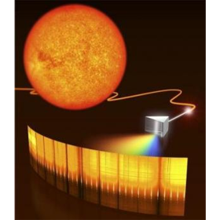

-

Prof. Dr. Xiaochun Gong
* 08.2008 - 06.2012: Bachelor, Ocean University of China
* 09.2012 - 07.2017: PhD of Optics Science at East China Normal University, (Strong field physics, Prof. Jian Wu)
* 07.2015 - 08.2015: Visitor, Photonics Institute,Vienna University of Technology
* 01.2018 - 12.2018: Post Doc, Laboratory of Chemistry biology at ETH Zurich, (Attosecond electron dynamics, Prof. Hans Jakob Woerner)
* 09.2017 - 10.2021: Zijiang Young Researcher,East China Normal University
* 11.2021 - 03.2024: Zijiang Outstanding Researcher,East China Normal University
* 03.2024 - to date: Associate Professor, Zhejiang University
Open Positions
We do something useful, important, and unique in ultrafast science. If you are interested in our research directions and works, please feel free to contact me xcgong@zju.edu.cn.
"Master", "PhD", and "Postdoc" research position in following directions:
* Fundamental Research 1: Attosecond electron motion in atoms and molecules：AttoPhysics+AttoChemistry
* Fundamental Research 2: Ultrafast electron and nuclear coupling in complex molecules: FemtoChemistry
* Fundamental Research 3: Ultrafast electron motion in condensed matter: AttoSolid
* Fundamental Research 4: Attosecond science in surface and complex biological systems：AttoBio
* Application 5: ultrashort and intense femtosecond laser pulse generation: FemtoLightSource
* Application 6: Attosecond VUV/EUV light source and its applications in structure science: AttoLightSource
工程师 王旭涵
-
来自山东淄博。
研究高次谐波及阿秒光谱。
爱好乒乓球、钢琴。
硕士毕业于 西安交通大学
联合培养 博士研究生 杨雪梅
-

四川人
主要从事中红外激光器、高次谐波研究。
爱好学习
四川大学
2023级 博士研究生 康元
-
 来自四川广元
来自四川广元
研究超短脉冲产生、阿秒时间分辨高次谐波光谱
爱好篮球、乒乓球
本科毕业于大连理工大学
2024级 硕士研究生 张庆宇
-
山东济宁人
研究高通量极紫外光源、孤立阿秒脉冲产生及应用
爱好羽毛球
本科毕业于西安电子科技大学
2025级 博士研究生 欧显彬
-
四川泸州人
研究孤立阿秒脉冲的产生及阿秒电子动力学
爱好乒乓、吉他，热爱运动
本科毕业于中国海洋大学
2025级 博士研究生 练米芮
-
 来自浙江衢州
来自浙江衢州
研究中红外固体高次谐波光谱
爱好台球、画画
本科毕业于中国海洋大学